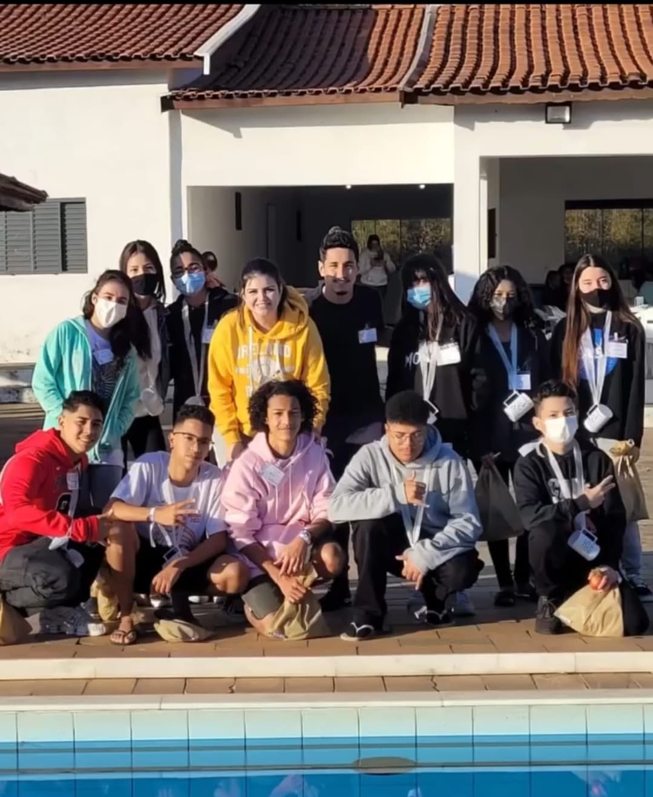
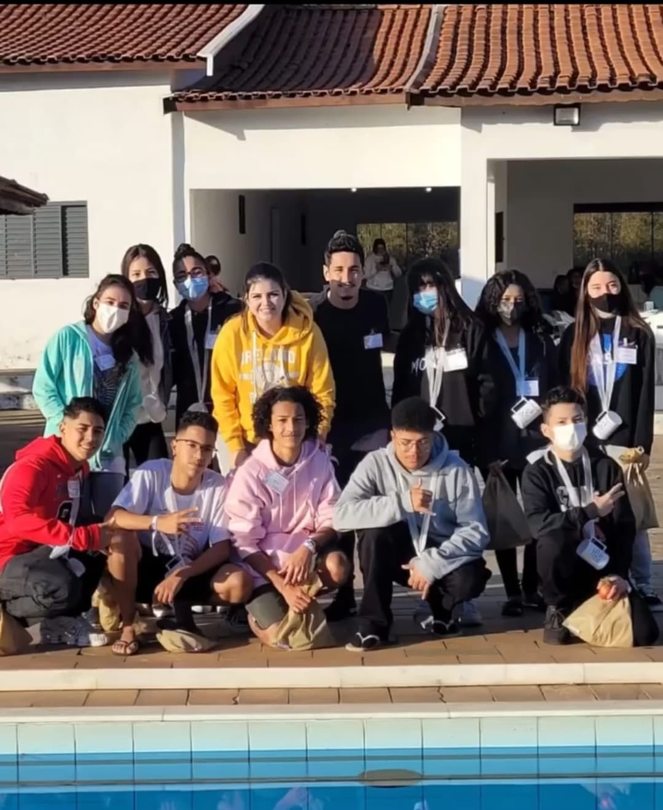
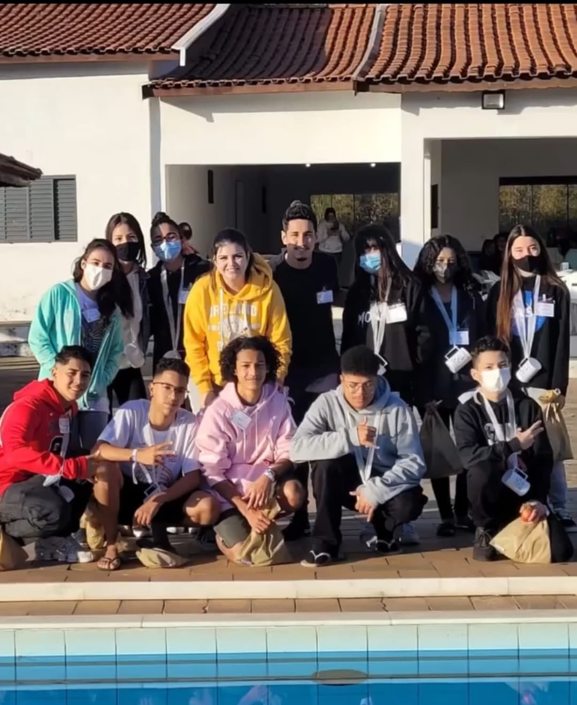
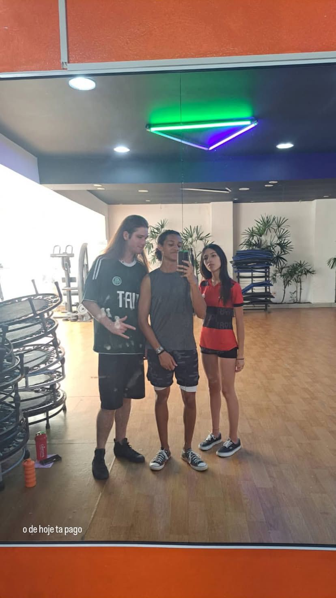

Nos conhecemos no dia 01 de Julho de 2022 por volta de umas 20h quando descobrimos que iríamos ser da mesma equipe, sabemos que existimos a
 

Nos conhecemos no dia 01 de Julho de 2022 por volta de umas 20h quando descobrimos que iríamos ser da mesma equipe, sabemos que existimos a

Mas não nos amigamos nesse dia, um tempo passou e foi então que esse dia chegou...
No dia de 7 Janeiro de 2023, treinamos juntos com o Matheuzão por volta de umas 14h. Nosso único treino juntos e foi a dias
Ambos tímidos, ambos falaram pouco mas, gostamos um do outro. Marcamos denovo e...
Chegou o dia 03 de Fevereiro de 2023, vulgo aniversário do Be. Que dia incrível, estava muito nervoso. Pude conhecer um pouquinho mais do seu mundo. Família, Pampam, humor de todos e tals. Passei uma vergonha e tanto, não acompanhei o Sr Pardal na cantoria e ficou uma revanche.
Tempo passou e não nos resolvemos, lembro de ter visto pela última vez na festa do seminário e não fui falar por vergonha. Olhando postagens da festa, foi no dia 24 de Junho, por volta de umas 20h. Então paramos de se falar....
Até que na festa de St Antônio você veio, por vergonha ignorei, mas inevitávelmente, fui até você vender cartela e ficou um clima estranho.
Um belo dia de trabalho, olho as notificações e vejo que me seguiu no insta, fiquei sem o que fazer e então voltamos a conversar e marcamos de ir no Mc Donalds. Super engraçado, ambos preferem o BK e esclarecemos o passado. Assim ficando de 24 de Junho de 2023 até 19 de Outubro de 2024 sem se falar. Um total de 483 longe um do outro. Voltamos a conversar em
Partindo daí, realmente aprendiz o significado de felicidade!!!


Aprendi o significado de amar e ser amado.
Primeira vez que me chamou de "meu bem"! ;)
Muitas boiolagens e provinhas de amor
Tivemos nossos momentos, e o seu aniversário foi o ápice, infelizmente não podemos estar junto, prova e trabalho para apresentar no dia, mas pude fazer surpresinhas!!!
Compartilhamos nossas dores, nossos problemas
Mas sempre um animando o outro.
Quando começamos enchergar as diferenças, nossas contradições
Mas sempre um apoiando um ao outro.
Até que momentos turbulentos chegaram. Sempre por parte minha, erro meu. Confiava em mim, à mudança, a Redenção. Problemas que fugiam do nosso controle, também ocorreram.
Em fim, terminamos......
Fim?!
Tantos sonhos!
Tanto carinho!
Você sabe que eu não vou desistir, preciso provar o quanto te amo, te quero, o quanto importante foi isso para nós e o quão isso vai ser. Desistir não é opção, nunca foi. Você sabe que eu te amo, você me ama. Tudo a perder não é opção!!!